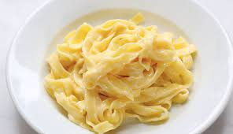

Pâtes au beurre

This is a well konw dish for student with no money at all
who still want to eat a bit. It is fat and full of calories while
being less than 1 euros to make
Ingredients
- 200g of pâtes eco
- A bit of butter
- That's all
Steps
- Boil 500ml of water
- When it is boilling, put the pasta in for 6-7 minutes
- Serve with a bit of butter
- And Voilà